Castalia is built for veteran Diablo II players who want to experiment with a reimagined skill and resource economy—experiencing a more grounded, tactical version of Diablo II rather than an overpowered power-fantasy.
- Playthrough-Focused (Solo or Co-op): Designed to be played alone or with friends as a complete expedition from Act 1 Normal through Act 5 Hell. There is no artificial endgame treadmill; once your playthrough is complete, the journey is complete.
- What You See Is How It Works: Every monster prints its elemental vulnerability, resistance, and combat trait directly beneath its health bar. Physical silhouettes tell the truth: if a monster is small, it is fast, numerous, and fragile; if it is huge, it is slow, solitary, and hits like a truck.
- Logical World Connections: Town mystics and sages stock caster gear, heavy tower shields slow your block recovery (`-15% FBR`) in exchange for raw armor, and pulling on an enclosed greathelm narrows your light radius in the dark (`-2` to `-3` Light Radius).
⚔ JOIN A CO-OP CAMPAIGN OR GENERATE A STARTER CHARACTER SAVE (.d2s) |
|||||||||
|---|---|---|---|---|---|---|---|---|---|
|
Generate a ready-to-play Castalia character save (
.d2s) seeded with your unique character name (required so two players never collide in TCP/IP multiplayer), authentic charstats.txt Life/Mana/Stamina pools, unspent Skill & Stat points, completed quest rewards, Personal Stash Gold, and the tier-matched Horadric Cube + Gems/Skulls + Runes starter kit.
Shareable Pre-Filled URL:
?name=Alex&class=pal&level=30&wp=a5n#char-generator
|
📁 WHERE TO SAVE YOUR
.d2s FILE (2-SECOND SHORTCUT)
Click Copy Windows Save Path below, then when the Save As window opens (or in File Explorer), press %USERPROFILE%\Saved Games\Diablo II Resurrected\mods\castalia
Automatic Level-Tier Starter Loadout Included:
|
||||||||
| ⚒ THE 7 HORADRIC CUBE RECIPES (ALL YOU NEED TO PLAY) | ||
|---|---|---|
| Recipe Purpose | Horadric Cube Inputs | Resulting Output |
| 1. Craft Any Item | Any Magic Item + 1 Gem / Skull + 2 Runes | Crafted Item stamped with the Gem's stat + both Runes' stats (scaled by Gem tier) + 1–4 random affixes |
| 2. Distill a Unique / Set | Any Unique or Set Item + Blacksmith's Malus + Magic Jewel | Crafted Jewel containing that Unique or Set item's Top 4 signature stats |
| 3. Punch Sockets | Unsocketed Weapon / Armor + Blacksmith's Malus + Perfect Skull | Punches 1 to 2 Sockets into the item (works on Magic, Rare, Crafted, Set, or Unique) |
| 4. Clear Sockets | Socketed Weapon / Armor + Blacksmith's Malus + Perfect Skull | Clears all sockets on the item (destroying socketed contents so you can re-socket) |
| 5. Upgrade Base Tier | Normal or Exceptional Item + Tempered Malus (Charsi Quest) | Upgrades base tier (Normal → Exceptional or Exceptional → Elite; strictly 3 per playthrough) |
| 6. Combine / Split Runes & Gems | 2x Identical Gems/Runes —or— 1x Rune + 1x Gem | Upgrades 2-to-1 into next tier —or— Splits a Rune into lower runes (50% to 100% recovery by Gem tier) |
| 7. Unlock a Lockbox | 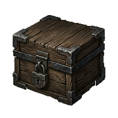 Crude / Iron / Ornate Lockbox + Matching Key |
Unlocks the Unique or Set item sealed inside (Keys sold by town vendors for 5k / 25k / 50k Gold) |
1. First Principles Over Flashcards (1)When you only memorize flashcards, every new problem requires a new card; when you understand the underlying rules of arithmetic, you can solve problems you have never seen before. Traditional Runewords reward flashcard memorization—looking up arbitrary rune sequences whose individual pieces have little connection to the final result. By stripping away Runewords and giving every Gem, Skull, and Rune a single, consistent rule, Castalia lets you engineer over 270,000 crafting combinations from first principles. 2. Keeping the World Intact (2)Town Portals, Rejuvenation Potions, and universal |
3. Every Item Color Has Its Own Crown & No Free Immunity Breakers (3)
4. The Combat Gold Standard (4)(5)(6)(7)Vendors cap sell-back prices at |
| 7 GEM & SKULL FAMILIES (Level Req: 1 / 15 / 30 / 45 / 60 | Crafting Output ilvl: 14 / 29 / 44 / 59 / 100% clvl) | ||||||
|---|---|---|---|---|---|---|
| Family | Slot Group | Chipped (Req 1) Rune Mult: 0.20-0.30x |
Flawed (Req 15) Rune Mult: 0.35-0.45x |
Standard (Req 30) Rune Mult: 0.55-0.65x |
Flawless (Req 45) Rune Mult: 0.75-0.85x |
Perfect (Req 60) Rune Mult: 0.90-1.00x |
| Ruby (Fire) | Weapon / Gloves (0.6x) / Ring (0.5x) | Adds 3–5 Fire Damage | Adds 10–16 Fire Damage | Adds 28–45 Fire Damage | Adds 65–100 Fire Damage | Adds 120–180 Fire Damage |
| Armor / Helm (0.75x) / Boots-Belt (0.6x) / Amulet (0.5x) | Fire Resist +8% | Fire Resist +12% | Fire Resist +17% | Fire Resist +23% | Fire Resist +30% | |
| Shield / Off-Hand (1.0x) | Fire Resist +12% | Fire Resist +18% | Fire Resist +26% | Fire Resist +35% | Fire Resist +45% | |
| Sapphire (Cold) | Weapon / Gloves (0.6x) / Ring (0.5x) | Adds 2–4 Cold Damage | Adds 7–12 Cold Damage | Adds 20–32 Cold Damage | Adds 45–70 Cold Damage | Adds 85–130 Cold Damage |
| Armor / Helm (0.75x) / Boots-Belt (0.6x) / Amulet (0.5x) | Cold Resist +8% | Cold Resist +12% | Cold Resist +17% | Cold Resist +23% | Cold Resist +30% | |
| Shield / Off-Hand (1.0x) | Cold Resist +12% | Cold Resist +18% | Cold Resist +26% | Cold Resist +35% | Cold Resist +45% | |
| Topaz (Lightning) | Weapon / Gloves (0.6x) / Ring (0.5x) | Adds 1–8 Lightning Damage | Adds 1–26 Lightning Damage | Adds 1–72 Lightning Damage | Adds 1–165 Lightning Damage | Adds 1–300 Lightning Damage |
| Armor / Helm (0.75x) / Boots-Belt (0.6x) / Amulet (0.5x) | Lightning Resist +8% | Lightning Resist +12% | Lightning Resist +17% | Lightning Resist +23% | Lightning Resist +30% | |
| Shield / Off-Hand (1.0x) | Lightning Resist +12% | Lightning Resist +18% | Lightning Resist +26% | Lightning Resist +35% | Lightning Resist +45% | |
| Emerald (Poison) | Weapon / Gloves (0.6x) / Ring (0.5x) | +10 Poison Damage over 3s | +32 Poison Damage over 3s | +80 Poison Damage over 3s | +175 Poison Damage over 3s | +298 Poison Damage over 3s |
| Armor / Helm (0.75x) / Boots-Belt (0.6x) / Amulet (0.5x) | Poison Resist +8% | Poison Resist +12% | Poison Resist +17% | Poison Resist +23% | Poison Resist +30% | |
| Shield / Off-Hand (1.0x) | Poison Resist +12% | Poison Resist +18% | Poison Resist +26% | Poison Resist +35% | Poison Resist +45% | |
| Diamond (Arcane) | Weapon / Gloves (0.6x) / Ring (0.5x) | Adds 2–4 Magic Damage | Adds 8–14 Magic Damage | Adds 22–36 Magic Damage | Adds 50–80 Magic Damage | Adds 95–145 Magic Damage |
| Armor / Helm (0.75x) / Boots-Belt (0.6x) / Amulet (0.5x) | Magic Resist +5% | Magic Resist +8% | Magic Resist +11% | Magic Resist +15% | Magic Resist +20% | |
| Shield / Off-Hand (1.0x) | Magic Resist +7% | Magic Resist +11% | Magic Resist +16% | Magic Resist +22% | Magic Resist +30% | |
| Amethyst (Physical) | Weapon / Gloves (0.6x) / Ring (0.5x) | +10% Enhanced Damage | +20% Enhanced Damage | +30% Enhanced Damage | +45% Enhanced Damage | +60% Enhanced Damage |
| Armor / Helm (0.75x) / Boots-Belt (0.6x) / Amulet (0.5x) | +20 Defense | +45 Defense | +85 Defense | +140 Defense | +210 Defense | |
| Shield / Off-Hand (1.0x) | +30 Defense | +65 Defense | +120 Defense | +195 Defense | +290 Defense | |
| Skull (Attrition) | Weapon / Gloves (0.6x) / Ring (0.5x) | -15 to Monster Defense Per Hit | -30 to Monster Defense Per Hit | -50 to Monster Defense Per Hit | -125 to Monster Defense Per Hit | -250 to Monster Defense Per Hit |
| Armor / Helm (0.75x) / Boots-Belt (0.6x) / Amulet (0.5x) | Damage Reduced by 2 | Damage Reduced by 4 | Damage Reduced by 6 | Damage Reduced by 9 | Damage Reduced by 12 | |
| Shield / Off-Hand (1.0x) | Damage Reduced by 3 | Damage Reduced by 6 | Damage Reduced by 10 | Damage Reduced by 15 | Damage Reduced by 20 | |
| THE 33 SEMANTIC RUNES (r01 – r33 | Built Automatically from gems.txt & misc.txt) | ||||
|---|---|---|---|---|
| Rune | Semantic Name (Lvl Req) | Weapon / Gloves (0.6x) / Ring (0.5x) | Armor / Helm (0.75x) / Boots-Belt (0.6x) / Amul (0.5x) | Shield / Off-Hand (1.0x) |
| r01 | Accuracy Rune (Lvl 4) | 20% Bonus to Attack Rating | +50 to Attack Rating | +50 to Attack Rating |
| r02 | Featherweight Rune (Lvl 6) | Requirements -20% | Requirements -15% | Requirements -15% |
| r03 | Siphoning Rune (Lvl 8) | +2 to Mana after each Kill | +1 to Mana after each Kill | +1 to Mana after each Kill |
| r04 | Reaping Rune (Lvl 10) | +3 Life after each Kill | +2 Life after each Kill | +2 Life after each Kill |
| r05 | Mighty Rune (Lvl 12) | +10 to Strength | +10 to Strength | +10 to Strength |
| r06 | Deft Rune (Lvl 14) | +10 to Dexterity | +10 to Dexterity | +10 to Dexterity |
| r07 | Stalwart Rune (Lvl 16) | +10 to Vitality | +10 to Vitality | +10 to Vitality |
| r08 | Mystic Rune (Lvl 18) | +10 to Energy | +10 to Energy | +10 to Energy |
| r09 | Prosperous Rune (Lvl 20) | 25% Extra Gold from Monsters | 15% Extra Gold from Monsters | 15% Extra Gold from Monsters |
| r10 | Fortuitous Rune (Lvl 22) | 20% Better Chance of Getting Magic Items | 15% Better Chance of Getting Magic Items | 15% Better Chance of Getting Magic Items |
| r11 | Fortified Rune (Lvl 24) | +50 Defense | +35% Enhanced Defense | +35% Enhanced Defense |
| r12 | Tempered Rune (Lvl 26) | +9 to Minimum Damage | +6 to Minimum Damage | +7 to Minimum Damage |
| r13 | Honed Rune (Lvl 28) | +15 to Maximum Damage | +10 to Maximum Damage | +8 to Maximum Damage |
| r14 | Vampiric Rune (Lvl 30) | 7% Life stolen per hit | 4% Life stolen per hit | 4% Life stolen per hit |
| r15 | Leeching Rune (Lvl 32) | 7% Mana stolen per hit | 4% Mana stolen per hit | 4% Mana stolen per hit |
| r16 | Alacrity Rune (Lvl 34) | +15% Increased Attack Speed | +15% Faster Run/Walk | +20% Faster Block Rate |
| r17 | Poise Rune (Lvl 36) | Knockback | +20% Faster Hit Recovery | 10% Increased Chance of Blocking |
| r18 | Channeling Rune (Lvl 38) | +10% Faster Cast Rate | +8% Faster Cast Rate | +8% Faster Cast Rate |
| r19 | Rending Rune (Lvl 40) | +20% Chance of Open Wounds | +10% Chance of Open Wounds | +10% Chance of Open Wounds |
| r20 | Crippling Rune (Lvl 42) | Slows Target by 15% | Slows Target by 8% | Slows Target by 10% |
| r21 | Piercing Rune (Lvl 44) | +20% Piercing Attack | +10% Piercing Attack | +10% Piercing Attack |
| r22 | Vital Rune (Lvl 46) | +40 to Life | Increase Maximum Life 6% | Increase Maximum Life 6% |
| r23 | Lethal Rune (Lvl 48) | +15% Deadly Strike | +8% Deadly Strike | +8% Deadly Strike |
| r24 | Crushing Rune (Lvl 50) | +15% Chance of Crushing Blow | +8% Chance of Crushing Blow | +8% Chance of Crushing Blow |
| r25 | Prismatic Rune (Lvl 52) | All Resistances +12 | All Resistances +12 | All Resistances +18 |
| r26 | Scorching Rune (Lvl 54) | +10% to Fire Skill Damage | +4% to Maximum Fire Resist | Fire Absorb +5% |
| r27 | Glacial Rune (Lvl 56) | +10% to Cold Skill Damage | +4% to Maximum Cold Resist | Cold Absorb +5% |
| r28 | Tempest Rune (Lvl 58) | +10% to Lightning Skill Damage | +4% to Maximum Lightning Resist | Lightning Absorb +5% |
| r29 | Virulent Rune (Lvl 60) | +10% to Poison Skill Damage | +4% to Maximum Poison Resist | Poison Length Reduced by 25% |
| r30 | Eldritch Rune (Lvl 62) | +10% to Magic Skill Damage | +4% to Maximum Magic Resist | Magic Absorb +5% |
| r31 | Adamant Rune (Lvl 64) | Ignore Target's Defense | Physical Damage Received Reduced by 6% | Physical Damage Received Reduced by 6% |
| r32 | Eternal Rune (Lvl 66) | Indestructible | Indestructible | Indestructible |
| r33 | Sovereign Rune (Lvl 68) | +1 to All Skills | +1 to All Skills | +1 to All Skills |
| THE 4 MONSTER COMBAT ARCHETYPES (Strictly 1 Unique Pack Per Zone, 99% Max Resist Cap) | ||||
|---|---|---|---|---|
| Archetype & Silhouette | Pack Size | HP Scaling (N → H) | Damage Scaling | Tactical Behavior |
| 1. Heavy Brutes & Dread Hulks Zombies, Yetis, Blunderbores, Thorned Hulks, Siege Beasts, Blood Lords |
1 – 2 | 3.40x → 4.08x |
1.70x → 2.00x |
Slow, lumbering juggernauts with 15% Critical Strike and +4 skill levels. Punish face-tanking; reward kiting and Crushing Blow. |
| 2. Swarmers Fallen, Flayers, Quill Rats, Scarabs, Spiders, Imps, Stygian Dolls |
Full Packs | 1.30x → 1.56x |
1.20x → 1.42x |
Fast (`+2` Walk/Run), low-HP packs that overwhelm positioning; countered by AoE control and Flat Physical Damage Reduced. |
| 3. Arcane Casters Shamans, Wraiths, Unravelers, Gloams, Vampires, Succubi, Oblivion Knights |
2 – 3 | 2.15x → 2.58x |
1.50x → 1.77x |
High-priority spellcasters with +6 skill levels; demand line-of-sight discipline, elemental absorb/max resist, and gap-closers. |
| 4. Elite Infantry Corrupt Rogues, Skeletons, Goatmen, Claw Vipers, Zealots, Doom Knights |
2 – 4 | 2.50x → 3.00x |
1.45x → 1.71x |
Balanced frontline formations with 12% Critical Strike and +4 skill levels. |
| 10-SLOT MERCENARY LOADOUTS & SKILL KITS (All Mercs Equip Helm, Armor, Weap, Off-Hand, Gloves, Boots, Belt, Amulet & 2 Rings) | |
|---|---|
| Act 1 Rogue Scouts (Bows + Magic/Rare Quivers) |
Fire Rogue: Weaken / Life Tap / Lower Resist + Fire & Exploding Arrow | Ice Rogue: Dim Vision / Slow Missiles / Decrepify + Cold & Freezing Arrow | Physical Rogue: Inner Sight / Cloak of Shadows / Amplify Damage + Multiple Shot, Strafe & Critical Strike. |
| Act 2 Desert Guards (9-Aura Progression Matrix) |
Normal: Thorns, Defiance, Blessed Aim | Nightmare: Cleansing, Holy Freeze, Vigor | Hell: Meditation, Salvation, Sanctuary. |
| Act 3 Iron Wolves (Sword + Shield Casters) |
Dedicated Fire, Cold, and Lightning spellcasters scaling with Elemental Masteries and Faster Cast Rate. |
| Act 5 Barbarians (2H Vanguard or 1H Dual-Wield) |
2H Vanguard: Stun + Battle Orders + Might / Concentration | 1H Dual-Wield: Frenzy + Double Swing + Might / Fanaticism + Iron Skin. |
Defensive Auras (0 pts) | Offensive Auras (0 pts) | Combat Skills (0 pts) 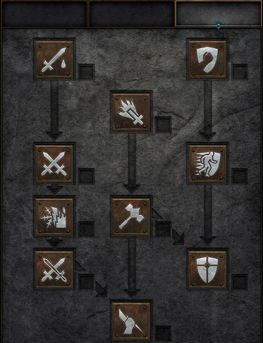 Defensive Auras Offensive Auras Combat Skills 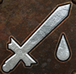 00000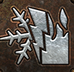 0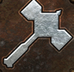 0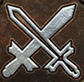 00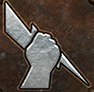 0 |
| Paladin — Defensive Auras | ||
|---|---|---|
| Icon | Skill & Tier | Effect & Tactical Role |
| Prayer Req Level: 1 Prereqs: None | when active, aura slowly regenerates — the life of you and your party Lvl 1 → 20: Mana Cost: 0 per second • Radius: 10.7 -> 36 yards • Heals: +3 -> +30 Synergies: Cleansing: +9% Life Healed per Level | |
| Resist Fire Req Level: 1 Prereqs: None | when active, aura decreases fire damage — done to you and your party Lvl 1 → 20: Mana Cost: 0.6 -> 6.6 per second • Radius: 10.7 -> 36 yards • Maximum Fire Resist: +0.5% -> +10% (Passive) • Maximum Fire Resist: +1% -> +20% (Active) • Resist Fire: +33% -> +139% | |
| Defiance Req Level: 8 Prereqs: None | when active, aura bolsters the defense of you and your party — and reduces physical damage taken from attacks Lvl 1 → 20: Mana Cost: 0.6 -> 6.6 per second • Radius: 10.7 -> 36 yards • Defense: +80% -> +308% • Physical Damage Reduced by 2 -> 42 | |
| Resist Cold Req Level: 8 Prereqs: None | when active, aura decreases cold damage — done to you and your party Lvl 1 → 20: Mana Cost: 0.6 -> 6.6 per second • Radius: 10.7 -> 36 yards • Maximum Cold Resist: +0.5% -> +10% (Passive) • Maximum Cold Resist: +1% -> +20% (Active) • Resist Cold: +33% -> +139% | |
| Cleansing Req Level: 16 Prereqs: Prayer | when active, aura reduces the length — of time you and your party — will remain poisoned or cursed Lvl 1 → 20: Mana Cost: 0.5 -> 5.2 per second • Radius: 10.7 -> 36 yards • Duration reduced by 25% -> 63% | |
| Resist Lightning Req Level: 16 Prereqs: None | when active, aura decreases lightning damage — done to you and your party Lvl 1 → 20: Mana Cost: 0.6 -> 6.6 per second • Radius: 10.7 -> 36 yards • Maximum Lightning Resist: +0.5% -> +10% (Passive) • Maximum Lightning Resist: +1% -> +20% (Active) • Resist Lightning: +33% -> +139% | |
| Vigor Req Level: 24 Prereqs: Cleansing, Defiance | when active, aura increases movement speed and hit recovery — for you and your party to swiftly reposition in battle Lvl 1 → 20: Mana Cost: 0.6 -> 6.6 per second • Radius: 10.7 -> 48.7 yards • Run/Walk Speed: +13% -> +43% • +10% -> +67% Faster Hit Recovery | |
| Meditation Req Level: 32 Prereqs: Cleansing | when active, aura increases mana recovery — for you and your party Lvl 1 → 20: Radius: 10.7 -> 36 yards • Mana Recovery Rate: +300% -> +775% • Your Damage: -50% | |
| Redemption Req Level: 40 Prereqs: Vigor | when active, aura restores life and mana after each kill — while periodically redeeming nearby slain enemies Lvl 1 → 20: Chance to redeem soul: 36% -> 88% • +21 -> +112 Life after each Kill • +14 -> +74 to Mana after each Kill • Radius: 10.7 -> 23.3 yards | |
| Salvation Req Level: 40 Prereqs: None | when active, aura decreases fire, cold and lightning damage — done to you and your party Lvl 1 → 20: Mana Cost: 0.6 -> 6.6 per second • Radius: 10.7 -> 36 yards • Resist All: +25% -> +116% | |
| Paladin — Offensive Auras | ||
|---|---|---|
| Icon | Skill & Tier | Effect & Tactical Role |
| Might Req Level: 1 Prereqs: None | when active, aura increases the damage — done by you and your party Lvl 1 → 20: Mana Cost: 0.6 -> 6.6 per second • Radius: 10.7 -> 36 yards • Damage: +30% -> +315% • Passive Bonus: +3% -> +60% Enhanced Damage | |
| Holy Fire Req Level: 8 Prereqs: Might | when active, aura damages nearby enemies — with heavenly flames — adds fire damage to your attack Lvl 1 → 20: Mana Cost: 0.5 -> 5.2 per second • Radius: 4 -> 13.3 yards • Fire Damage: 2-8 -> 31-90 • Fire Damage: 12-24 -> 189-270 to your attack • Area damage increases at closer range Synergies: Resist Fire: +6% Fire Damage per Level • Salvation: +12% Fire Damage per Level | |
| Thorns Req Level: 8 Prereqs: None | when active, aura reflects melee damage taken by you — and your party back at your enemies Lvl 1 → 20: Mana Cost: 0.6 -> 6.6 per second • Radius: 10.7 -> 36 yards • 250% -> 1010% damage returned • Physical Damage Reduced by 1% -> 20% • +10% -> +48% Chance of Open Wounds Synergies: Sacrifice: +3% Damage per Level • Redemption: +6% Damage per Level | |
| Blessed Aim Req Level: 16 Prereqs: Might | when active, aura increases the attack rating — for you and your party Lvl 1 → 20: Mana Cost: 0.6 -> 6.6 per second • Radius: 10.7 -> 36 yards • Attack Rating: +5% -> +100% (Passive) • Attack Rating: +75% -> +360% (Active) | |
| Concentration Req Level: 24 Prereqs: Blessed Aim | when active, aura increases the damage and decreases the chance — that the attack will be interrupted for you and your party Lvl 1 → 20: Mana Cost: 0.9 -> 6.9 per second • Radius: 10.7 -> 36 yards • Damage: +45% -> +387% • Chance uninterruptable: 25% • Passive Bonus: +3% -> +60% Enhanced Damage | |
| Holy Freeze Req Level: 24 Prereqs: Holy Fire | when active, aura freezes nearby monsters — adds cold damage to your attack Lvl 1 → 20: Mana Cost: 0.5 -> 5.2 per second • Radius: 4 -> 13.3 yards • Enemies slowed 28% -> 46% • Cold Damage: 9-24 -> 52-110 • Cold Damage: 45-60 -> 260-275 to your attack • Area damage increases at closer range Synergies: Resist Cold: +6% Cold Damage per Level • Salvation: +12% Cold Damage per Level | |
| Holy Shock Req Level: 32 Prereqs: Holy Freeze | when active, aura causes pulses of electricity — to damage nearby enemies — adds lightning damage to your attack Lvl 1 → 20: Mana Cost: 0.5 -> 5.2 per second • Radius: 4 -> 13.3 yards • Lightning Damage: 1-50 -> 1-394 • Lightning Damage: 1-150 -> 1-1182 to your attack • Area damage increases at closer range Synergies: Resist Lightning: +6% Lightning Damage per Level • Salvation: +12% Lightning Damage per Level | |
| Sanctuary Req Level: 32 Prereqs: Thorns, Holy Freeze | when active, aura damages the undead — and knocks them back Lvl 1 → 20: Mana Cost: 0.5 -> 5.2 per second • Radius: 3.3 -> 12.7 yards • Magic Damage: 11-32 -> 78-204 • Magic Damage To Your Attack: 44-64 -> 312-408 • Area damage increases at closer range Synergies: Cleansing: +6% Magic Damage per Level • Blessed Hammer: +12% Magic Damage per Level | |
| Fanaticism Req Level: 40 Prereqs: Concentration | when active, aura increases damage, attack speed — and attack rating for you and your party Lvl 1 → 20: Mana Cost: 1.2 -> 7.2 per second • Radius: 7.3 -> 20 yards • Attack Speed: +13% -> +26% • Party Damage: +43% -> +170% • Your Damage: +65% -> +255% • Attack Rating: +25% -> +82% | |
| Conviction Req Level: 40 Prereqs: Sanctuary | when active, aura empowers you and your party with — fire, cold, and lightning damage based on points in each Resistance Aura — while attacks slow enemies and shred monster defense per hit Lvl 1 → 20: Mana Cost: 1.2 -> 7.2 per second • Radius: 13.3 yards • -60 -> -762 to Monster Defense Per Hit • Slows Enemies: 4% -> 35% Synergies: Resist Fire: +0% -> +6% Fire Damage per Level • Resist Cold: +0% -> +6% Cold Damage per Level • Resist Lightning: +0% -> +6% Lightning Damage per Level | |
| Paladin — Combat Skills | ||
|---|---|---|
| Icon | Skill & Tier | Effect & Tactical Role |
| Sacrifice Req Level: 1 Prereqs: None | increased accuracy and damage — at the cost of life Lvl 1 → 20: Damage: +300% -> +908% • Attack Rating: +20% -> +153% • 12% -> 6% damage to Self Synergies: Prayer: +12% Damage per Level • Redemption: +12% Damage per Level • Fanaticism: +10% Damage per Level | |
| Smite Req Level: 1 Prereqs: None | temporarily stun your enemy — by bashing it with your shield Lvl 1 → 20: Stun Length: 1 -> 5.6 seconds • Damage: +100% -> +955% • Mana Cost: 2 • Always Hits Synergies: Charge: +15% Damage per Level | |
| Holy Bolt Req Level: 8 Prereqs: None | a bolt of divine energy — that damages demons and undead — or heals allies Lvl 1 → 20: Mana Cost: 4 -> 13.5 • Heals: 1-6 -> 39-82 • Magic Damage: 8-16 -> 395-458 Synergies: Sanctuary: +15% Magic Damage per Level • Fist of the Heavens: +25% Magic Damage per Level • Prayer: +15% Life Healed per Level | |
| Zeal Req Level: 16 Prereqs: Sacrifice | allows you to attack multiple adjacent enemies — with a single attack Lvl 1 → 20: Damage: +20% -> +229% • Attack Rating: +20% -> +248% • 2 -> 4 hits • Mana Cost: 2 Synergies: Sacrifice: +8% Damage per Level | |
| Charge Req Level: 16 Prereqs: Smite | charge into battle and attack an enemy Lvl 1 → 20: Damage: +150% -> +758% • Attack Rating: +50% -> +335% • Stun Length: 1.4 seconds • Mana Cost: 6 Synergies: Might: +12% Damage per Level • Vigor: +12% Damage per Level • Smite: +8% Duration per Level | |
| Vengeance Req Level: 24 Prereqs: Zeal | cleaves enemies in a frontal arc, adding fire, lightning, — and cold damage to each successful attack Lvl 1 → 20: Mana Cost: 3 -> 7.8 • Lightning Damage: +45% -> +159% • Cold Length: 1.2 -> 12.6 seconds • Cold Damage: +45% -> +159% • Fire Damage: +45% -> +159% • Attack Rating: +40% -> +325% • Cleave Arc: 156 Degrees Synergies: Resist Fire: +23% Fire Damage per Level • Resist Cold: +23% Cold Damage per Level • Resist Lightning: +23% Lightning Damage per Level | |
| Blessed Hammer Req Level: 24 Prereqs: Holy Bolt | hurls an ethereal hammer that bounces between nearby enemies, — dealing magic damage, knocking back, and stunning targets Lvl 1 → 20: Mana Cost: 15 -> 34 • Magic Damage: 48-64 -> 392-454 • 4 -> 8 hits • Stun Length: 0.6 seconds • Casting Delay: 1 seconds Synergies: Sanctuary: +12% Magic Damage per Level • Smite: +10% Duration per Level | |
| Conversion Req Level: 32 Prereqs: Vengeance | converts monsters to fight against — other foul demons and beasts Lvl 1 → 20: Chance to convert: 14% -> 76% • Attack Rating: +50% -> +335% • 50% Weapon Damage • Mana Cost: 4 -> 8.8 • Duration: 12 -> 21.5 seconds | |
| Holy Shield Req Level: 32 Prereqs: Charge, Blessed Hammer | enhances your shield with divine power, increasing blocking — and reducing physical and magic damage taken Lvl 1 → 20: Duration: 25 -> 82 seconds • Successful Blocking: +14% -> +35% • Physical Damage Reduced by 5 -> 62 • Magic Damage Reduced by 5 -> 62 • Mana Cost: 40 -> 78 Synergies: Defiance: +15% Defense per Level | |
| Fist of the Heavens Req Level: 40 Prereqs: Blessed Hammer, Conversion | lightning strikes your target as holy bolts — seek out nearby enemies Lvl 1 → 20: Holy Bolt Damage: 30-40 -> 231-276 • Lightning Damage: 220-300 -> 2092-2320 • 3 -> 7 bolts • Mana Cost: 40 -> 97 • Casting Delay: 1.4 seconds Synergies: Holy Bolt: +12% Holy Bolt Damage per Level • Sanctuary: +12% Holy Bolt Damage per Level • Holy Shock: +18% Lightning Damage per Level | |
Warcries (0 pts) | Combat Masteries (0 pts) 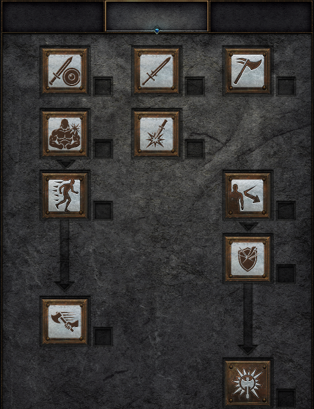 Warcries Combat Masteries Combat 0Skills 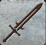 0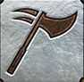 00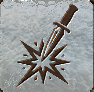 0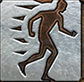 0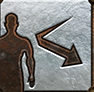 0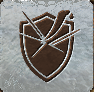 0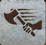 00 | Combat Skills (0 pts) 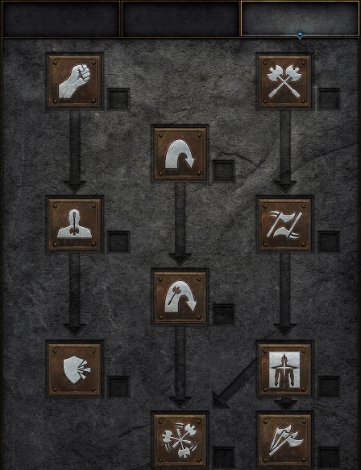 Warcries Combat Masteries Combat Skills 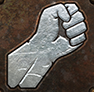 00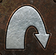 0000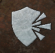 000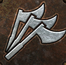 0 |
| Barbarian — Warcries | ||
|---|---|---|
| Icon | Skill & Tier | Effect & Tactical Role |
| Shout Req Level: 1 Prereqs: None | reduces damage taken by you and your party Lvl 1 → 20: Physical Damage Reduced by 3 -> 41 • Duration: 20 -> 29.9 seconds • Radius: 12.7 yards • Mana Cost: 5 -> 14.5 • Casting Delay: 3 seconds | |
| Enduring Cry Req Level: 1 Prereqs: None | increases maximum stamina for you and your party Lvl 1 → 20: Max Stamina: +25 -> +253 • Duration: 20 -> 29.9 seconds • Radius: 12.7 yards • Mana Cost: 5 -> 14.5 • Casting Delay: 3 seconds Synergies: Second Wind: +5 Max Stamina per Level | |
| Taunt Req Level: 8 Prereqs: None | enrages a monster into relentlessly attacking Lvl 1 → 20: Enemy Damage: -5% -> -43% • Target's Attack Rating: -5% -> -43% • Mana Cost: 3 • Casting Delay: 3 seconds | |
| Howl Req Level: 16 Prereqs: Taunt | sends nearby monsters — scrambling away in fear Lvl 1 → 20: Duration: 3 -> 22 seconds • Monster runs up to 16 -> 79.3 yards • Radius: 2.7 -> 15.3 yards • Mana Cost: 7 -> 16.5 • Casting Delay: 3 seconds | |
| Second Wind Req Level: 16 Prereqs: Enduring Cry | restores stamina to you and your party Lvl 1 → 20: Stamina Restored: +60 -> +402 • Mana Cost: 8 -> 17.5 • Casting Delay: 3 seconds | |
| Battle Command Req Level: 24 Prereqs: Shout | restores life to you and your party Lvl 1 → 20: Life Restored: +60 -> +402 • Radius: 12.7 yards • Mana Cost: 11 -> 20.5 • Casting Delay: 3 seconds Synergies: Shout: +10 Life Restored per Level | |
| Battle Cry Req Level: 24 Prereqs: Howl | fearsome cry that decreases — enemies' defense and damage Lvl 1 → 20: Duration: 12 -> 29.5 seconds • Enemy Defense: -50% -> -88% • Enemy Damage: -25% -> -44% • Radius: 3.3 yards • Mana Cost: 10 -> 19.5 • Casting Delay: 3 seconds | |
| Battle Orders Req Level: 32 Prereqs: Battle Command | increases maximum life for you and your party Lvl 1 → 20: Duration: 20 -> 29.9 seconds • Max Life: +35% -> +92% • Radius: 12.7 yards • Mana Cost: 14 -> 23.5 • Casting Delay: 3 seconds | |
| Bloodlust Req Level: 32 Prereqs: Second Wind | boosts exhausted attacks for you, but drains life Lvl 1 → 20: Max Damage Bonus at Zero Stamina: +30% -> +296% • Max Attack Rating at Zero Stamina: +20% -> +172% • Life Drained per Second: -4 -> -23 • Duration: 20 -> 29.9 seconds • Mana Cost: 14 -> 23.5 • Casting Delay: 3 seconds | |
| War Cry Req Level: 40 Prereqs: Battle Orders, Battle Cry, Bloodlust | stuns nearby enemies and lowers their — physical and magic resistance Lvl 1 → 20: Stun Length: 1.4 -> 6 seconds • Enemy Physical & Magic Resistance: -17% -> -74% • Duration: 8 -> 27 seconds • Radius: 4.7 yards • Mana Cost: 16 -> 25.5 • Casting Delay: 3 seconds Synergies: Battle Cry: -1% Enemy Physical & Magic Resistance per Level | |
| Barbarian — Combat Masteries | ||
|---|---|---|
| Icon | Skill & Tier | Effect & Tactical Role |
| One-Handed Mastery Req Level: 1 Prereqs: None | passive - improves one-handed melee fighting skill Lvl 1 → 20: Damage: +28% -> +123% • Attack Rating: +40% -> +192% | |
| Two-Handed Mastery Req Level: 1 Prereqs: None | passive - improves two-handed melee fighting skill Lvl 1 → 20: Damage: +28% -> +123% • Attack Rating: +40% -> +192% | |
| Throwing Mastery Req Level: 1 Prereqs: None | passive - improves thrown weapon skill Lvl 1 → 20: Replenish Quantity on Critical Strike • 10% -> 55% Chance to not consume Quantity • 8% -> 46% Chance to Pierce • Damage: +28% -> +123% • Attack Rating: +44% -> +196% | |
| Unflinching Req Level: 8 Prereqs: None | passive - improves hit recovery speed Lvl 1 → 20: Faster Hit Recovery: +24% -> +65% | |
| Critical Strike Req Level: 8 Prereqs: None | passive - chance to deal double physical damage Lvl 1 → 20: 14% -> 43% Chance of Critical Strike | |
| Increased Speed Req Level: 16 Prereqs: Unflinching | passive - increases walk and run speed Lvl 1 → 20: Run/Walk Speed: +13% -> +43% | |
| Iron Skin Req Level: 16 Prereqs: None | passive - improves defense Lvl 1 → 20: Defense: +30% -> +220% | |
| Venom Ward Req Level: 24 Prereqs: Iron Skin | passive - reduces poison duration and raises max poison resist Lvl 1 → 20: Poison Length Reduced by 24% -> 65% • Maximum Poison Resist: +2% -> +12% | |
| Battle Fervor Req Level: 32 Prereqs: Increased Speed | passive - increases attack speed Lvl 1 → 20: Attack Speed: +12% -> +34% | |
| Natural Resistance Req Level: 40 Prereqs: Venom Ward | passive - increases natural resistances — to elemental and poison damage Lvl 1 → 20: Resist All: +12% -> +67% | |
| Barbarian — Combat Skills | ||
|---|---|---|
| Icon | Skill & Tier | Effect & Tactical Role |
| Strike Req Level: 1 Prereqs: None | powerful blow that knocks back target — deals more damage with high stamina Lvl 1 → 20: Well-Rested Bonus: Up to +40% -> +135% Damage at Full Stamina • Damage: +70% -> +279% • Damage: +2 -> +21 • Attack Rating: +20% -> +115% Synergies: Concentrate: +6% Damage per Level • Concentrate: +8% Attack Rating per Level | |
| Flurry Req Level: 1 Prereqs: None | rapidly attacks with two weapons — deals more damage as stamina is depleted Lvl 1 → 20: Exhaustion Bonus: Up to +50% -> +240% Damage at Zero Stamina • Damage: +25% -> +139% • Attack Rating: +15% -> +110% Synergies: Barrage: +6% Damage per Level | |
| Leap Req Level: 8 Prereqs: None | leaps and knocks back nearby enemies — consumes stamina; range and speed degrade as stamina is depleted Lvl 1 → 20: Knockback Radius: 2.7 -> 15.3 yards • Range Radius: 7.3 -> 17.3 yards • Stamina Cost: 12 | |
| Concentrate Req Level: 16 Prereqs: Strike | uninterruptible attack that improves defense — deals more damage with high stamina Lvl 1 → 20: Well-Rested Bonus: Up to +60% -> +250% Damage at Full Stamina • Damage: +110% -> +452% • Defense: +200% -> +580% • Attack Rating: +60% -> +250% Synergies: Strike: +6% Damage per Level • Shield Slam: +6% Damage per Level | |
| Barrage Req Level: 16 Prereqs: Flurry | throws both equipped weapons — deals more damage as stamina is depleted Lvl 1 → 20: Exhaustion Bonus: Up to +70% -> +355% Damage at Zero Stamina • Damage: +40% -> +192% • Attack Rating: +20% -> +210% Synergies: Flurry: +8% Damage per Level | |
| Leap Attack Req Level: 24 Prereqs: Leap | leaps to attack target and stuns nearby enemies — consumes stamina; damage and stun degrade as stamina is depleted Lvl 1 → 20: Exhaustion Penalty: Down to -50% Damage at Zero Stamina • Damage: +150% -> +530% • Attack Rating: +100% -> +480% • Damage: 10-20 -> 150-300 • Radius: 4.7 yards • Stamina Cost: 16 • Duration: 1.4 seconds Synergies: Leap: +10% Damage per Level | |
| Shield Slam Req Level: 32 Prereqs: Concentrate | requires a shield — charges and stuns target; deals more damage with high stamina Lvl 1 → 20: Well-Rested Bonus: Up to +100% -> +385% Damage at Full Stamina • Damage: +200% -> +770% • Stun Length: 1.8 -> 7.5 seconds • Attack Rating: +75% -> +360% • Casting Delay: 1 seconds Synergies: Strike: +8% Damage per Level • Concentrate: +8% Damage per Level • Concentrate: +12% Attack Rating per Level | |
| Berserk Req Level: 32 Prereqs: Barrage | requires a two-handed weapon — converts damage to magic and drops defense to zero — deals more damage as stamina is depleted Lvl 1 → 20: Exhaustion Bonus: Up to +100% -> +480% Damage at Zero Stamina • Magic Damage: +80% -> +308% • Attack Rating: +100% -> +385% • Duration: 2.7 -> 1.3 seconds Synergies: Flurry: +8% Magic Damage per Level • Frenzy: +8% Magic Damage per Level | |
| Whirlwind Req Level: 40 Prereqs: Leap Attack, Berserk | whirling dance of death — consumes stamina; damage degrades as stamina is depleted Lvl 1 → 20: Stamina Cost per Strike: 6 • Exhaustion Penalty: Down to -50% Damage at Zero Stamina • Damage: +80% -> +346% • Attack Rating: +50% -> +145% Synergies: Leap: +8% Damage per Level • Leap Attack: +8% Damage per Level | |
| Frenzy Req Level: 40 Prereqs: Berserk | swings two weapons and increases speed on hit — deals more damage as stamina is depleted Lvl 1 → 20: Exhaustion Bonus: Up to +90% -> +470% Damage at Zero Stamina • Damage: +70% -> +260% • Run/Walk Speed: +44-45% -> +44-155% • Attack Speed: +16% -> +16-43% • Attack Rating: +100% -> +233% • Duration: 6 seconds Synergies: Flurry: +8% Damage per Level • Berserk: +8% Damage per Level • Berserk: +1% Magic Damage per Level | |
Martial Arts (0 pts) 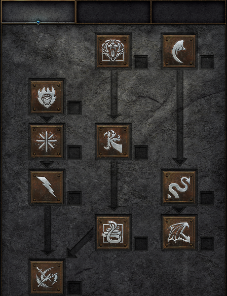 Martial Arts Shadow Disciplines Traps 00000& Blades 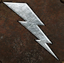 00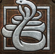 0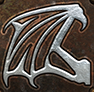 00 | Shadow Disciplines (0 pts) 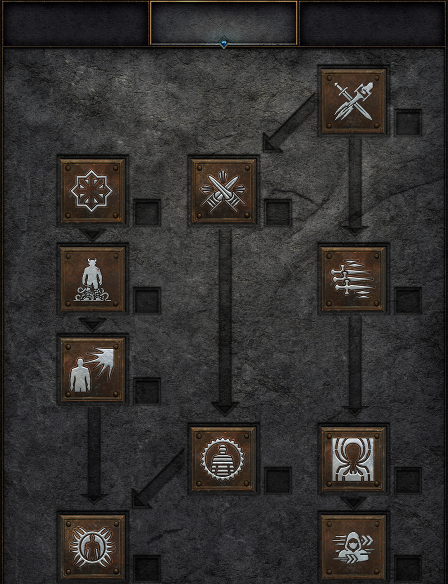 Martial Arts Shadow Disciplines Traps & Blades 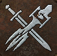 00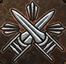 000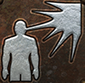 00000 | Traps & Blades (0 pts) 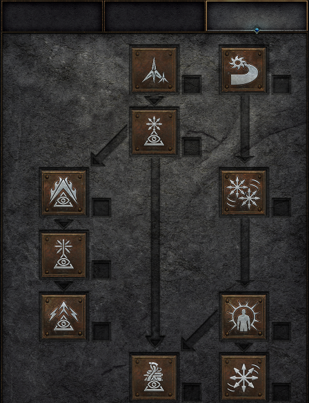 Martial Arts Shadow Disciplines Traps & Blades 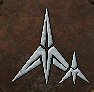 00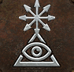 000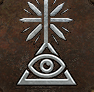 0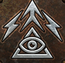 0000 |
| Assassin — Martial Arts | ||
|---|---|---|
| Icon | Skill & Tier | Effect & Tactical Role |
| Tiger Strike Req Level: 1 Prereqs: None | Charge-up Skill — builds up to 3 physical orbs that boost melee damage — release charges with a finishing move or cast Shrapnel Sentry Lvl 1 → 20: Charge 3 Finisher - Max Shockwave: 12-24 -> 117-198 • Charge 2 Finisher - Heavy Shockwave: 8-16 -> 78-132 • Charge 1 Finisher - Shockwave Ring: 4-8 -> 39-66 • Held Charge Bonus: +6% -> +64% Damage per Orb • Attack Rating: +25% -> +215% • Mana Cost: 1 Synergies: Dragon Talon: +12% Damage per Level • Shrapnel Sentry: +6% Damage per Level | |
| Dragon Talon Req Level: 1 Prereqs: None | Finishing Move — kick your enemies out of your way — adds charged-up bonuses to the kick Lvl 1 → 20: Kick Damage: +5% -> +138% • Attack Rating: +20% -> +685% • 1 -> 4 Kicks • Mana Cost: 6 | |
| Flamestrike Req Level: 8 Prereqs: None | Charge-up Skill — builds up to 3 fire orbs that add fire damage to melee attacks — release charges with a finishing move or cast Fire Sentry Lvl 1 → 20: Charge 3 Finisher - Crashing Meteor: 24-48 -> 198-396 • Charge 2 Finisher - Burning Ground: 0 -> 3-6 per second • Charge 1 Finisher - Fire Explosion: 8-16 -> 66-132 • Held Charge Bonus: +2-4 -> +15-30 Fire Damage per Orb • Attack Rating: +25% -> +215% • Mana Cost: 2.5 -> 4.9 Synergies: Fire Sentry: +12% Fire Damage per Level • Blades of Ice: +6% Fire Damage per Level • Electrocute: +6% Fire Damage per Level | |
| Blades of Ice Req Level: 16 Prereqs: Flamestrike | Charge-up Skill — builds up to 3 ice orbs that add cold damage to melee attacks — release charges with a finishing move or cast Ice Sentry Lvl 1 → 20: Charge 3 Finisher - Frozen Orb Bolt: 15-30 -> 127-254 • Charge 2 Finisher - Ice Blast & Bolts: 20-40 -> 174-348 • Charge 1 Finisher - Ice Blast: 10-20 -> 87-174 • Held Charge Bonus: +3-6 -> +16-32 Cold Damage per Orb • Attack Rating: +25% -> +215% • Mana Cost: 3 -> 5.4 Synergies: Ice Sentry: +12% Cold Damage per Level • Flamestrike: +6% Cold Damage per Level • Electrocute: +6% Cold Damage per Level | |
| Dragon Claw Req Level: 16 Prereqs: Tiger Strike | Finishing Move — slice and dice your enemies — with your dual claw class weapons — adds charged-up bonuses to both claw attacks Lvl 1 → 20: Damage: +50% -> +335% • Attack Rating: +40% -> +515% • Mana Cost: 4 Synergies: Lethality: +4% Damage per Level | |
| Electrocute Req Level: 24 Prereqs: Blades of Ice | Charge-up Skill — builds up to 3 lightning orbs that add lightning damage to melee attacks — release charges with a finishing move or cast Lightning Sentry Lvl 1 → 20: Charge 3 Finisher - Chain Lightning: 1-120 -> 1-970 • Charge 2 Finisher - Lightning Nova: 1-80 -> 1-644 • Charge 1 Finisher - Charged Bolts: 1-30 -> 1-254 • Held Charge Bonus: +1-10 -> +1-56 Lightning Damage per Orb • Attack Rating: +25% -> +215% • Mana Cost: 3.5 -> 5.9 Synergies: Lightning Sentry: +12% Lightning Damage per Level • Flamestrike: +6% Lightning Damage per Level • Blades of Ice: +6% Lightning Damage per Level | |
| Dragon Tail Req Level: 24 Prereqs: Dragon Talon | Finishing Move — knock back your enemies with an explosive kick — adds charged-up bonuses to the kick Lvl 1 → 20: Fire Damage: +40% -> +268% • Attack Rating: +20% -> +305% • Mana Cost: 10 • Radius: 4 yards | |
| Cobra Strike Req Level: 32 Prereqs: Dragon Claw | Charge-up Skill — builds up to 3 soul orbs that shred monster defense per hit — release charges with a finishing move or cast Soul Siphon Sentry Lvl 1 → 20: Charge 3 Finisher - Life & Mana Steal: +90% -> +318% | Soul-Hex: -150 -> -2385 Defense • Charge 2 Finisher - Life & Mana Steal: +45% -> +159% | Soul-Hex: -100 -> -1590 Defense • Charge 1 Finisher - Life Steal: +45% -> +159% | Soul-Hex: -50 -> -795 Defense • Held Charge Bonus: -60 -> -430 to Monster Defense Per Hit per Orb • Attack Rating: +25% -> +215% • Mana Cost: 1.5 Synergies: Dragon Claw: +12% Finisher Leech & Defense Shred per Level • Soul Siphon Sentry: +6% Finisher Leech & Defense Shred per Level | |
| Dragon Flight Req Level: 32 Prereqs: Dragon Tail | Finishing Move — teleport to your enemies — and destroy them with a kick — adds charged-up bonuses to the kick Lvl 1 → 20: Kick Damage: +75% -> +455% • Attack Rating: +60% -> +535% • Mana Cost: 18 | |
| Omnislash Req Level: 40 Prereqs: Electrocute, Cobra Strike | Does not release orbs — spin through nearby enemies, striking with your weapon — and any held orb damage while slowing the movement — and attack speed of enemies in your wake Lvl 1 → 20: Damage: +36% -> +150% • Attack Rating: +50% -> +335% • Slows Enemies: 22% -> 60% • Duration: 3 seconds • Mana Cost: 8 Synergies: Shuriken: +8% Damage per Level • Dragon Claw: +5% Damage per Level | |
| Assassin — Shadow Disciplines | ||
|---|---|---|
| Icon | Skill & Tier | Effect & Tactical Role |
| Lethality Req Level: 1 Prereqs: None | Passive — improves your attack rating and damage — with all melee weapons Lvl 1 → 20: Attack Rating: +30% -> +182% • Damage: +25% -> +101% | |
| Cloak of Shadows Req Level: 8 Prereqs: None | cast a shadow to blind nearby enemies — lowering their defenses for a period of time Lvl 1 → 20: Duration: 8 -> 27 seconds • Enemy Defense: -15% -> -72% • Defense: +10% -> +67% • Mana Cost: 15 -> 24.5 • Range: 20 yards | |
| Weapon Block Req Level: 8 Prereqs: Lethality | passive - chance to block when — you are using dual claw class weapons Lvl 1 → 20: 27% -> 58% chance | |
| Shadow Bind Req Level: 16 Prereqs: Cloak of Shadows | binds a target in tendrils of shadow — crippling its movement speed, attack speed, and accuracy — effective against unique monsters and bosses Lvl 1 → 20: Enemy Movement Speed: -65% -> -89% • Enemy Attack and Cast Speed: -30% -> -54% • Enemy Attack Rating: -30% -> -54% • Duration: 6 -> 13.6 seconds • Mana Cost: 15 -> 24.5 | |
| Burst of Speed Req Level: 16 Prereqs: Lethality | increases attack and movement speed — for a period of time Lvl 1 → 20: Duration: 22 -> 60 seconds • Run/Walk Speed: +23% -> +61% • Attack Speed: +22% -> +53% • Mana Cost: 25 -> 53.5 | |
| Mind Blast Req Level: 24 Prereqs: Shadow Bind | using the power of your mind — stun a group of enemies — and convert the feeble-minded Lvl 1 → 20: Chance to convert: 18% -> 36% • Stun Length: 2 -> 5.8 seconds • Damage: 10-20 -> 96-106 • Mana Cost: 18 -> 27.5 • Duration: 6-10 seconds | |
| Fade Req Level: 32 Prereqs: Weapon Block | raise all resistances and resist curses — for a period of time Lvl 1 → 20: Duration: 22 -> 60 seconds • Resist All: +20% -> +65% • Physical Damage Received Reduced by 1% -> 20% • Reduces curse duration by 47% -> 82% • Mana Cost: 30 -> 68 | |
| Venom Req Level: 32 Prereqs: Burst of Speed | add poison damage to your weapons Lvl 1 → 20: Duration: 120 -> 348 seconds • over 0.4 seconds • Poison Damage: 60-80 -> 425-445 • Mana Cost: 25 -> 53.5 | |
| Shadow Master Req Level: 40 Prereqs: Fade, Mind Blast | summon a powerful shadow of yourself — to fight by your side Lvl 1 → 20: Mana Cost: 40 -> 59 • Resist All: +18% -> +76% • Attack Rating: 40 -> 800 • Life: 100 -> 385 • Casting Delay: 0.6 seconds | |
| Flow Req Level: 40 Prereqs: Venom | Passive — gives a chance that using a finishing move — does not consume the orbs you are holding Lvl 1 → 20: Chance Not to Consume Orbs when Using a Finishing Move: 20% -> 50% | |
| Assassin — Traps & Blades | ||
|---|---|---|
| Icon | Skill & Tier | Effect & Tactical Role |
| Caltrops Req Level: 1 Prereqs: None | throws a cluster of spiked caltrops onto the ground — that damage enemies walking over them Lvl 1 → 20: Duration: 3.6 -> 7.4 seconds • Physical Damage per Second: 2-5 -> 76-133 • Spikes: 6 -> 11 • Mana Cost: 5 -> 9.8 • Casting Delay: 0.6 seconds Synergies: Shrapnel Sentry: +1 Spike per 3 Levels | |
| Blade Sentinel Req Level: 1 Prereqs: None | set a spinning blade to patrol — between you and target point Lvl 1 → 20: Duration: 4 -> 13.1 seconds • Damage: 6-10 -> 79-83 • Mana Cost: 12 -> 31 • Casting Delay: 1 seconds • 75% Weapon Damage Synergies: Blade Shield: +20% Damage per Level | |
| Shrapnel Sentry Req Level: 8 Prereqs: Caltrops | deploys a sentry that fires spinning razor blades at enemies — consumes Tiger Strike charges to increase — shots, velocity, range, and open wounds Lvl 1 → 20: Damage: 10-18 -> 42-76 • Mana Cost: 8 -> 17.5 • Shoots 11 Times • Maximum Active Shrapnel Sentries: 1 • Charged Shots (1+ Orbs): 17 Synergies: Caltrops: +4% Damage per Level • Tiger Strike: +4% Damage per Level | |
| Fire Sentry Req Level: 16 Prereqs: Shrapnel Sentry | deploys a sentry that fires exploding fireballs — consumes Flamestrike charges to increase — shots, range, velocity, and stun on impact Lvl 1 → 20: Fire Damage: 14-24 -> 60-104 • Mana Cost: 18 -> 46.5 • Shoots 5 Times • Maximum Active Fire Sentries: 1 • Charged Shots (1+ Orbs): 8 Synergies: Flamestrike: +12% Fire Damage per Level • Ice Sentry: +6% Fire Damage per Level • Lightning Sentry: +6% Fire Damage per Level | |
| Blade Fury Req Level: 16 Prereqs: Blade Sentinel | throw spinning blades — to slice up your enemies Lvl 1 → 20: Mana Cost: 3 -> 7.8 per blade • Damage: 8-10 -> 101-103 • Attack Rating: +10% -> +200% • Minimum Mana Required to Cast: 3 • 75% Weapon Damage Synergies: Shuriken: +20% Damage per Level | |
| Ice Sentry Req Level: 24 Prereqs: Fire Sentry | deploys a sentry that fires freezing arctic blast streams — consumes Blades of Ice charges to increase — range, duration, and freeze enemies solid in place Lvl 1 → 20: Cold Damage: 10-16 -> 42-68 • Mana Cost: 22 -> 50.5 • Shoots 25 Times • Maximum Active Ice Sentries: 1 • Charged Shots (2+ Orbs): 40 Synergies: Blades of Ice: +12% Cold Damage per Level • Fire Sentry: +6% Cold Damage per Level • Lightning Sentry: +6% Cold Damage per Level | |
| Lightning Sentry Req Level: 32 Prereqs: Ice Sentry | deploys a sentry that shoots piercing lightning bolts — consumes Electrocute charges to increase — range, duration, and blind enemies with searing flashes Lvl 1 → 20: Lightning Damage: 1-64 -> 1-272 • Mana Cost: 25 -> 63 • Shoots 7 Times • Maximum Active Lightning Sentries: 1 • Charged Shots (2+ Orbs): 11 Synergies: Electrocute: +12% Lightning Damage per Level • Fire Sentry: +6% Lightning Damage per Level • Ice Sentry: +6% Lightning Damage per Level | |
| Blade Shield Req Level: 32 Prereqs: Blade Fury | spinning blades slice enemies — who stray too close Lvl 1 → 20: Mana Cost: 30 -> 68 • Duration: 120 -> 348 seconds • Damage: 1-30 -> 112-141 • Radius: 4 yards • 75% Weapon Damage Synergies: Blade Sentinel: +20% Damage per Level | |
| Soul Siphon Sentry Req Level: 40 Prereqs: Shrapnel Sentry, Blade Shield | deploys a sentry that fires piercing unholy bolts — dealing magic damage to enemies — consumes Cobra Strike charges to increase — shots, velocity, range, and apply small-radius life tap Lvl 1 → 20: Magic Damage: 32-50 -> 133-209 • Mana Cost: 10 -> 19.5 • Shoots 9 Times • Maximum Active Soul Siphon Sentries: 1 • Charged Shots (1+ Orbs): 14 Synergies: Cobra Strike: +15% Magic Damage per Level • Shrapnel Sentry: +9% Magic Damage per Level | |
| Shuriken Req Level: 40 Prereqs: Blade Shield | hurls a heavy razor-sharp shuriken that bounces — between nearby enemies, slicing through each — for heavy physical damage Lvl 1 → 20: Damage: 16-24 -> 136-179 • Attack Rating: +10% -> +200% • 6 -> 10 hits • 75% Weapon Damage • Mana Cost: 5 -> 9.8 Synergies: Blade Fury: +18% Damage per Level | |
Cold Spells (0 pts) 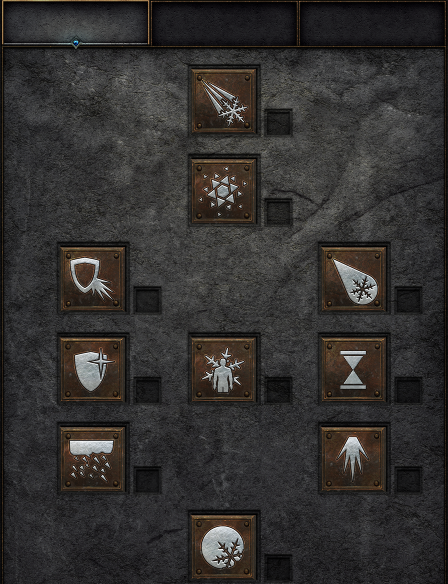 Cold Spells Lightning Spells Fire Spells 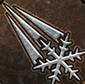 0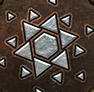 0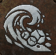 0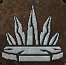 0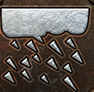 000 | Lightning Spells (0 pts) | Fire Spells (0 pts) |
| Sorceress — Cold Spells | ||
|---|---|---|
| Icon | Skill & Tier | Effect & Tactical Role |
| Frost Dart Req Level: 1 Prereqs: None | STUB: still behaves as vanilla Ice Bolt. — Design intent (line 1 (levelling)): — Fast long-range bolt that chills. In Cryostasis chill duration and bolt damage increase. Lvl 1 → 20: Cold Length: 6 -> 32.6 seconds • Cold Damage: 3-5 -> 38-49 • Mana Cost: 3 Synergies: Frost Nova: +15% Cold Damage per Level • Ice Blast: +15% Cold Damage per Level • Glacial Spike: +15% Cold Damage per Level • Blizzard: +15% Cold Damage per Level • Frozen Orb: +15% Cold Damage per Level | |
| Hoarfrost Burst Req Level: 8 Prereqs: None | STUB: still behaves as vanilla Frost Nova. — Design intent (AoE 1 (levelling)): — Instant ring around the caster (r5) that freezes 1.5s. In Cryostasis radius +30% and freeze +1s. Lvl 1 → 20: Mana Cost: 9 -> 28 • Cold Length: 8 -> 27 seconds • Cold Damage: 2-4 -> 75-86 Synergies: Blizzard: +10% Cold Damage per Level • Frozen Orb: +10% Cold Damage per Level | |
| Glacier Step Req Level: 16 Prereqs: None | requires Cryostasis to cast — blink across an icy path, freezing and damaging enemies along your wake and in a burst of ice spikes where you arrive Lvl 1 → 20: Mana Cost: 10 • Cold Damage: 12-18 -> 105-134 • Freezes for 2 -> 5.8 seconds • Radius: 3.3 yards • Casting Delay: 3 seconds Synergies: Frost Dart: +8% Cold Damage per Level • Hoarfrost Burst: +8% Cold Damage per Level | |
| Permafrost Req Level: 16 Prereqs: None | STUB: still behaves as vanilla Ice Blast. — Design intent (combo (CC/AoE)): — Ground freeze field (r5, 8s) that slows 40%; fire hits or melee strikes shatter enemies inside it. Strong on arrival, low per-level scaling. In Cryostasis the field is placed under you and you are chill-immune inside it. Lvl 1 → 20: Mana Cost: 6 -> 15.5 • Freeze Length: 3 -> 6.8 seconds • Cold Damage: 8-12 -> 253-266 Synergies: Ice Bolt: +8% Cold Damage per Level • Glacial Spike: +10% Freeze Length per Level • Blizzard: +8% Cold Damage per Level • Frozen Orb: +8% Cold Damage per Level | |
| Cryostasis Req Level: 24 Prereqs: None | Stance — encase yourself in frost, boosting cold damage and reducing physical damage taken and raising defense — at the cost of movement and cast speed — melee attackers that hit you are frozen — only one stance can be active at a time Lvl 1 → 20: Duration: 70 -> 260 seconds • Cold Skill Damage: +5% -> +75% • Physical Damage Reduced by 3% -> 25% • Run/Walk Speed Reduced by 5% -> 50% • Defense: +10% -> +200% • Faster Cast Rate: -5% -> -30% • Mana Cost: 7 • Freezes for 1.2 -> 3.5 seconds | |
| Equilibrium Req Level: 24 Prereqs: None | Passive — restores mana after each enemy you kill Lvl 1 → 20: Mana after each Kill: +2 -> +30 | |
| Brittle Touch Req Level: 24 Prereqs: None | Passive — lengthens how long melee attackers are frozen when they strike you during Cryostasis Lvl 1 → 20: Cold Stance Freeze Length: +5% -> +100% | |
| Whiteout Req Level: 32 Prereqs: None | STUB: still behaves as vanilla Blizzard. — Design intent (AoE 2 (power spike)): — Delayed (1s) snowstorm on the cursor, 4s, r8, slows and chills. First big cold AoE jump. In Cryostasis enemies caught 2s+ freeze solid. Lvl 1 → 20: Mana Cost: 23 -> 42 • Cold Damage: 45-75 -> 570-619 • Duration: 4 seconds • Casting Delay: 1.8 seconds Synergies: Ice Bolt: +5% Cold Damage per Level • Ice Blast: +5% Cold Damage per Level • Glacial Spike: +5% Cold Damage per Level | |
| Icicle Spear Req Level: 32 Prereqs: None | STUB: still behaves as vanilla Glacial Spike. — Design intent (line 2 (boss killer)): — Slow heavy lance that pierces ALL enemies in a line and deep-chills targets. In Cryostasis freeze duration x1.5. Lvl 1 → 20: Mana Cost: 10 -> 19.5 • Freeze Length: 2 -> 4.3 seconds • Cold Damage: 16-24 -> 225-242 • Radius: 2.7 yards Synergies: Ice Bolt: +5% Cold Damage per Level • Ice Blast: +5% Cold Damage per Level • Blizzard: +3% Freeze Length per Level • Frozen Orb: +5% Cold Damage per Level | |
| Frozen Orb Req Level: 40 Prereqs: None | STUB: still behaves as vanilla Frozen Orb. — Design intent (capstone): — Spinning orb travels to the cursor firing a ring of ice bolts, then returns. No cooldown, no self-risk. In Cryostasis frozen enemies hit by its bolts take +100% shatter damage. Lvl 1 → 20: Mana Cost: 25 -> 34.5 • Cold Length: 8 -> 27 seconds • Cold Damage: 40-45 -> 262-276 • Casting Delay: 1 seconds Synergies: Ice Bolt: +2% Cold Damage per Level | |
| Sorceress — Lightning Spells | ||
|---|---|---|
| Icon | Skill & Tier | Effect & Tactical Role |
| Static Lance Req Level: 1 Prereqs: None | STUB: still behaves as vanilla Lightning. — Design intent (line 1 (levelling)): — Instant long-range beam that pierces every enemy. In Overcharge it splits into three scattered beams. Lvl 1 → 20: Mana Cost: 8 -> 17.5 • Lightning Damage: 1-40 -> 1-272 Synergies: Charged Bolt: +8% Lightning Damage per Level • Nova: +8% Lightning Damage per Level • Chain Lightning: +8% Lightning Damage per Level | |
| Pulse Ring Req Level: 8 Prereqs: None | STUB: still behaves as vanilla Nova. — Design intent (AoE 1 (levelling)): — Instant expanding ring (r7) that shocks and triggers hit recovery. In Overcharge it discharges the crawling bolts early. Lvl 1 → 20: Mana Cost: 13 -> 32 • Lightning Damage: 1-20 -> 131-188 Synergies: Static Field: +5% Lightning Damage per Level | |
| Phase Step Req Level: 8 Prereqs: None | STUB: still behaves as vanilla Teleport. — Design intent (utility (mobility)): — 12-yd teleport, 2s cooldown. In Overcharge you land within 3 yd of the target point (random) and leave a bolt ring at the origin. Lvl 1 → 20: Mana Cost: 24 -> 5 | |
| Echo Req Level: 16 Prereqs: None | Passive — converts a percentage of damage taken into mana Lvl 1 → 20: Damage Taken Goes to Mana: 5% -> 75% | |
| Tesla Field Req Level: 16 Prereqs: None | STUB: still behaves as vanilla Static Field. — Design intent (combo (CC/AoE)): — Static orb on the ground (8s) zapping enemies within r6 every 0.5s and interrupting them. Strong on arrival, low per-level scaling. In Overcharge it absorbs your bolt ring and doubles its zap rate. Lvl 1 → 20: Radius: 3.3 -> 16 yards • Mana Cost: 9 • Weakens Enemies by 25% | |
| Conduction Req Level: 16 Prereqs: None | Passive — increases the lightning damage dealt to melee attackers — that hit you while Overcharge is active Lvl 1 → 20: Lightning Stance Retaliation Damage: +10% -> +200% | |
| Overcharge Req Level: 24 Prereqs: None | Stance — become supercharged, boosting lightning damage, movement and — hit recovery, but leaving you open to fire and cold — melee attackers that hit you are shocked — only one stance can be active at a time Lvl 1 → 20: Duration: 70 -> 260 seconds • Lightning Skill Damage: +5% -> +75% • Faster Run/Walk: +5% -> +40% • Faster Hit Recovery: +5% -> +40% • Fire Resist: -5% -> -75% • Cold Resist: -5% -> -75% • Mana Cost: 5 • Melee Attackers Take 8-15 -> 24-42 Lightning Damage When They Hit You | |
| Stormcall Req Level: 24 Prereqs: None | STUB: still behaves as vanilla Thunder Storm. — Design intent (AoE 2 (power spike)): — Delayed (1s) strikes at 4 random spots near the cursor (r5 each). First big lightning AoE jump. In Overcharge the strike count doubles. Lvl 1 → 20: Duration: 144 -> 600 seconds • Lightning Damage: 1-100 -> 195-294 • Mana Cost: 19 • Radius: 11.3 yards Synergies: Static Field: +7% Lightning Damage per Level | |
| Spearbolt Req Level: 32 Prereqs: None | STUB: still behaves as vanilla Chain Lightning. — Design intent (line 2 (boss killer)): — Slow heavy bolt that pierces ALL enemies in a line with high surge damage. In Overcharge it splits into two scattered bolts. Lvl 1 → 20: Mana Cost: 9 -> 28 • Lightning Damage: 1-40 -> 1-281 • 5 -> 9 hits Synergies: Charged Bolt: +4% Lightning Damage per Level • Nova: +4% Lightning Damage per Level • Lightning: +4% Lightning Damage per Level | |
| Heaven's Wrath Req Level: 40 Prereqs: None | STUB: still behaves as vanilla Charged Bolt. — Design intent (capstone): — Pillar of lightning strikes the cursor, then 8 follow-up strikes rain in a ring around it over 3s. No cooldown, no self-risk. In Overcharge strikes chain through Charged Bolts. Lvl 1 → 20: Mana Cost: 3 -> 12.5 • Lightning Damage: 2-4 -> 13-15 • 3 -> 22 bolts Synergies: Lightning: +6% Lightning Damage per Level | |
| Sorceress — Fire Spells | ||
|---|---|---|
| Icon | Skill & Tier | Effect & Tactical Role |
| Cinder Lance Req Level: 1 Prereqs: None | Hurls a bolt of flame against a single target — Bolts explode on impact while Conflagration is active Lvl 1 → 20: Fire Damage: 6-10 -> 64-80 • Mana Cost: 2.5 Synergies: Pyroclasm: +6% Fire Damage per Level • Brimstone Lance: +6% Fire Damage per Level | |
| Pyroclasm Req Level: 8 Prereqs: Cinder Lance | unleashes a ring of fiery bolts that knock enemies back Lvl 1 → 20: Mana Cost: 5 -> 14.5 • Fire Damage: 8-12 -> 82-105 • Bolts: 5 -> 8 Synergies: Cinder Lance: +6% Fire Damage per Level • Brimstone Lance: +6% Fire Damage per Level | |
| Backdraft Req Level: 8 Prereqs: None | Ignites a fiery vortex that draws enemies inward — before detonating in a blast Lvl 1 → 20: Mana Cost: 18 -> 37 • Average Fire Damage: 12-17 -> 140-172 per second • Fire Damage: 10-15 -> 119-147 Synergies: Pyroclasm: +4% Fire Damage per Level | |
| Conflagration Req Level: 16 Prereqs: None | Stance — Wreathe yourself in flame, empowering fire spells and cast speed — and restoring mana, at the cost of life drain and physical vulnerability — Only one stance may be active at a time Lvl 1 → 20: Duration: 70 -> 260 seconds • Fire Skill Damage: +5% -> +75% • Faster Cast Rate: +5% -> +40% • Physical Damage Taken Increased by 5% -> 50% • Life Drained per Second: 1 -> 10 • Mana Recovery Rate: +30% -> +258% • Mana Cost: 25 -> 44 • Melee Attackers Take 8-15 -> 24-42 Fire Damage When They Hit You | |
| Flashfire Req Level: 16 Prereqs: Conflagration | Requires Conflagration to cast — Sprint forward, leaving a trail of flame Lvl 1 → 20: Blaze Duration: 3 seconds • Run/Walk Speed: +50% • Casting Delay: 10 seconds | |
| Kindling Req Level: 24 Prereqs: Conflagration | Passive — increases the fire damage dealt to melee attackers while Conflagration is active Lvl 1 → 20: Fire Stance Retaliation Damage: +10% -> +200% | |
| Skyfall Req Level: 24 Prereqs: Flashfire | Calls down a meteor on your target, — leaving a crater of flame Lvl 1 → 20: Mana Cost: 13 -> 22.5 • Average Fire Damage: 23-32 -> 241-278 per second • Fire Damage: 45-65 -> 379-445 Synergies: Backdraft: +8% Fire Damage per Level • Pyroclasm: +4% Fire Damage per Level | |
| Brimstone Lance Req Level: 32 Prereqs: Pyroclasm | Hurls a heavy lance that pierces enemies — and leaves a fiery wake Lvl 1 → 20: Mana Cost: 7 -> 16.5 • Fire Damage: 28-40 -> 144-187 • Average Fire Damage: 9-15 -> 70-106 per second Synergies: Cinder Lance: +6% Fire Damage per Level • Pyroclasm: +6% Fire Damage per Level | |
| Ignition Req Level: 32 Prereqs: Kindling, Skyfall | Passive — continually regenerates life each second — offsetting Conflagration's life drain Lvl 1 → 20: Life Restored per Second: 1 -> 7 | |
| Pyre Hydra Req Level: 40 Prereqs: Brimstone Lance, Kindling | Summons fire-spewing hydra heads — that bombard nearby enemies Lvl 1 → 20: Mana Cost: 15 -> 24.5 • Hydra Fire Damage: 32-44 -> 164-207 • Duration: 10 -> 13.8 seconds • Max Hydras: 1 -> 2 Synergies: Brimstone Lance: +6% Fire Damage per Level • Pyroclasm: +6% Fire Damage per Level | |
- Combinatorial Grammar: Inspired by Hermann Hesse's Das Glasperlenspiel (The Glass Bead Game, 1943), where a small, transparent alphabet of symbols yields near-infinite combinations without arbitrary exceptions.
- The Magic Circle & Diegetic Space: Draws on Johan Huizinga's Homo Ludens (1938) and the concept of the Magic Circle—the fragile boundary that gives play-worlds their emotional gravity so long as instant escape hatches do not break the frame.
- Pareto Frontiers & Non-Dominated Strategies: Rooted in multi-objective game theory and Pareto optimality, ensuring that Magic, Rare, Crafted, and Unique/Set items occupy distinct strengths rather than collapsing into a single dominant meta.
- Bounded Rationality & Signal-to-Noise: Informed by Herbert Simon's Bounded Rationality, Daniel Kahneman's System 1 / System 2 attention model, and Barry Schwartz's The Paradox of Choice.
- Loss Aversion & Asymmetric Tradeoffs: Draws on Daniel Kahneman and Amos Tversky's Prospect Theory (1979), using voluntary vulnerabilities (Kiss-Curse items and Elemental Stances) to make build-defining power feel earned.
- Homeostatic Flow: Based on Mihaly Csikszentmihalyi's Flow (1990), coupling skill effectiveness to oscillating resource pendulums (Stamina, Aura Mana Upkeep, Held Combo Orbs, and Stance Dials).
- Sound Money, Marginal Utility & Reinforcement Schedules: Draws on Carl Menger's theory of marginal utility (1871), intertemporal opportunity cost, and B.F. Skinner's reinforcement schedules—preventing extinction of reinforcement during dry loot streaks by anchoring Gold to combat.